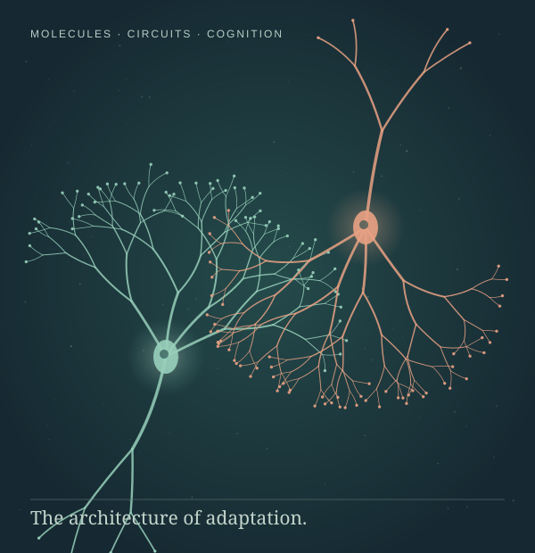

Images & movies
Science
in motion.
A window into living circuits. Explore published imaging alongside the questions and methods behind it.
Published research movie
Two signals.
One connected circuit.
Dual-calcium imaging of climbing fibers and Purkinje cells captures activity on both sides of a cerebellar connection. The movie shows the climbing-fiber channel, Purkinje-cell channel, and merged view from top to bottom.
The movie presents a 60-second recording. Excitation: 1000 nm. Time and scale are indicated within the original movie. This fluorescence movie has no spoken audio.
Read the experimental contextVideo 1 from Roh et al., eLife (2020), doi:10.7554/eLife.61593. © 2020 Roh et al. Reproduced unmodified under the Creative Commons Attribution 4.0 license.

Image gallery
Seeing activity
across a connection.
This still accompanies the published dual-calcium imaging movie. Viewing the two channels together connects cellular activity with the organization of a circuit.
Explore the published figures
Our visual perspective
Connections
across scales.
Our research connects molecular regulation with synaptic organization, circuit activity, and behavior. This conceptual illustration represents that connected perspective.
Explore our research questions